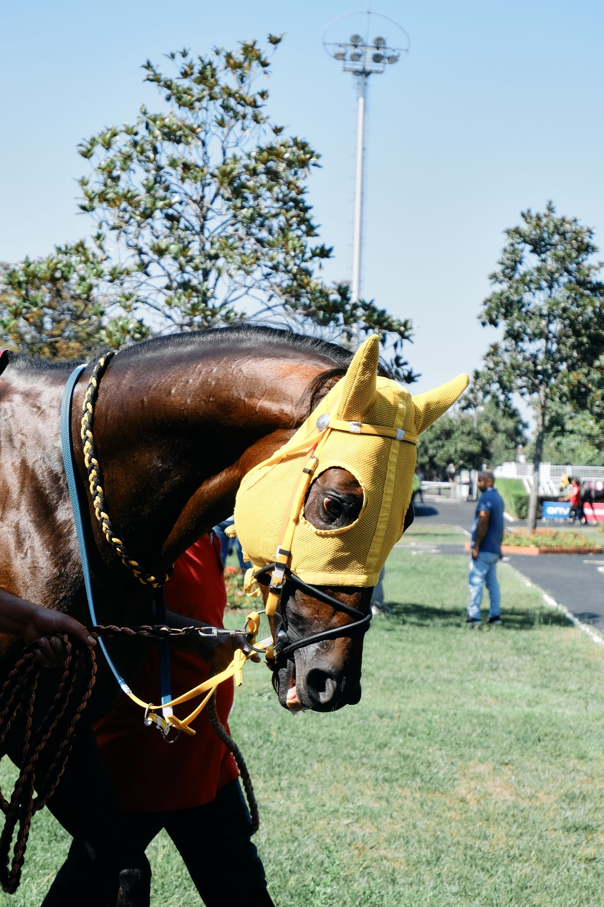

AI 看馬 — Feature Preview
パドックで撮った一枚を、AIはこう読む
「AI 看馬」機能の解析結果画面のイメージです。ユーザーがパドック（周回馬場）で馬を撮影すると、気配・表情・引き手との呼吸などをAIがスコア化して表示する想定です。

耳・イヤーネット
目の表情
頸部の毛づや
引き手との呼吸
※ AIが自動検出した注目ポイント（イメージ）
89/100
◎AI評価：本命級
イヤーネット越しでも目つきは穏やかで気合十分。引き手にも素直について、仕上がりは良好な一頭。
このスコア・コメントはデモ用のサンプルデータです。実際のAI判定ロジックは今後実装予定で、表示項目や配点は変更される可能性があります。写真はPexelsのフリー素材（実際のパドックで引き手が誘導する様子の代替イメージ）です。